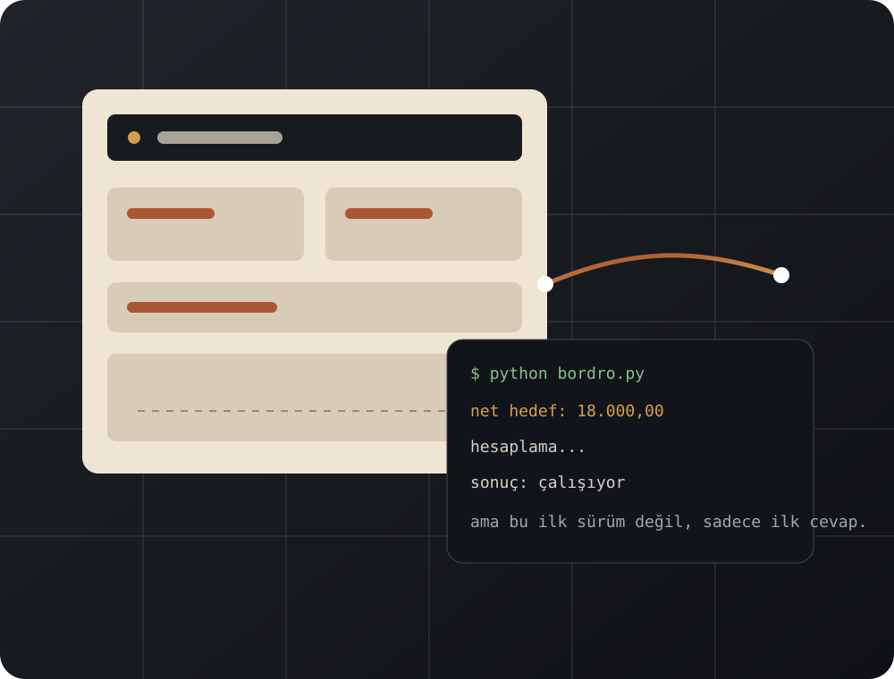

Geniş kapsamlı ilk laboratuvar
İlk Python sürümü
İzinlerden işten çıkışa, tazminat hesaplarından başka personel işlemlerine kadar çok sayıda modülü vardı. Çalışıyordu, fakat hem kod hem kullanım biçimi ağırlaştı.
WebBordro / DeltaBordro · Gelişiyor
Eşimin şirketindeki gerçek bir ihtiyaçla başladı. Kodlamayı yeni öğrenirken bunu bir meydan okuma olarak gördüm; çalışan ilk sürüm yetmeyince teknoloji, kapsam ve sadelik kararları defalarca değişti.

NEDEN BAŞLADI?
AÖF Bilgisayar bölümünün ikinci sınıfına yeni başlamıştım. Web tasarımı ve kodlama dersleri yeni bitmişti. Eşimin şirketinde bordro işlemlerini kolaylaştıracak bir programa ihtiyaç duyulunca bunu yalnızca bir yazılım isteği değil, kendime karşı bir meydan okuma olarak gördüm.
Hazır bir çözümü taklit etmek değil, gerçek kullanımın ne istediğini anlayıp çalışan bir şey kurmak istiyordum. İlk hedef büyük bir platform değildi; şirketin işini gerçekten kolaylaştıran bir araç yapabilmekti.
“Gerçekten kullanılan, hata kabul etmeyen bir programı kendim yapabilir miydim?”
GELİŞİM HARİTASI

İLK BÜYÜK DERS
Bir programın sonuç üretmesi, doğru ürün olduğu anlamına gelmiyor. İlk sürüm çok şey yapıyordu ama gerçek kullanıcı daha az karmaşa istiyordu. Bu proje bana özellik eklemenin her zaman ilerleme olmadığını gösterdi.
Gerçek iş akışında kullanılabilecek kadar işlevliydi.
Farklı personel işlemlerini tek yerde topluyordu.
Büyük bir uygulamanın nasıl büyüdüğünü öğretti.
Gereğinden fazla modül kullanım yükü oluşturdu.
Teknoloji ve mimari kararları öğrendikçe yeniden ele alındı.
Kullanıcı talebi sistemi büyütmekten çok sadeleştirmeye yöneltti.
KODDAN DAHA ZOR OLANLAR
Teknik ayrıntılar ana metni boğmasın diye soruların içinde açılıyor. İsteyen hızlıca geçer, isteyen derine iner.
Çünkü ilk sürüm ihtiyacı karşılayabilir ama kod yapısı, kullanım biçimi veya bakım maliyeti yanlış yönde büyüyebilir. Yeniden yazmak burada başarısızlık değil, öğrenilenleri daha temiz bir yapıya taşıma kararıydı.
Masaüstünde çalışan hesabın kurulu olduğu bilgisayara bağlı kalmaması fikri web sürümünü doğurdu. İlk hali küçüktü; sistem, gerçek ihtiyaçlar geldikçe büyüdü.
Geliştirici için kapsam güç gibi görünebilir; günlük kullanıcı içinse hız, açıklık ve gereksiz adımların olmaması daha değerlidir. DeltaBordro bu geri bildirimin sonucu oldu.
YZ VE BEN
Bu hikâyede en belirleyici karar yeni bir özellik eklemek değil, daha sade bir sürüm yapmaktı. Bu kararı kod üreten araç değil, kullanıcıyı ve işi bilen kişi verebildi.
Kod taslakları ve alternatif çözüm yolları üretti.
Hata nedenlerini araştırmaya ve büyük dosyaları incelemeye yardım etti.
Tekrarlayan kod, arayüz ve belgeleme işlerini hızlandırdı.
Şirketin gerçekten neye ihtiyacı olduğuna karar verdim.
Hesapların ve iş akışının gerçek kullanımda doğru olup olmadığını kontrol ettim.
Fazla karmaşık önerileri reddettim ve gerektiğinde sistemi küçülttüm.
BUGÜN NEREDE?
Çok modüllü ilk yaklaşım; sonraki bütün sürümlerin neyi değiştirmesi gerektiğini gösterdi.
Eşimin şirketine kurulan ve masaüstü kullanımını sınayan sürüm.
Basit hesap sayfasından daha kapsamlı bir web sistemine dönüşen yaşayan proje.
Daha sade ihtiyaca cevap veren hafif, nesne yönelimli Python sürümü.
BENDE KALANLAR